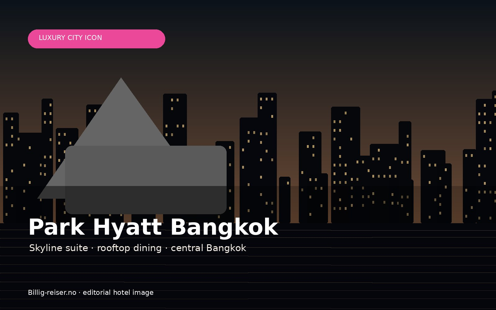
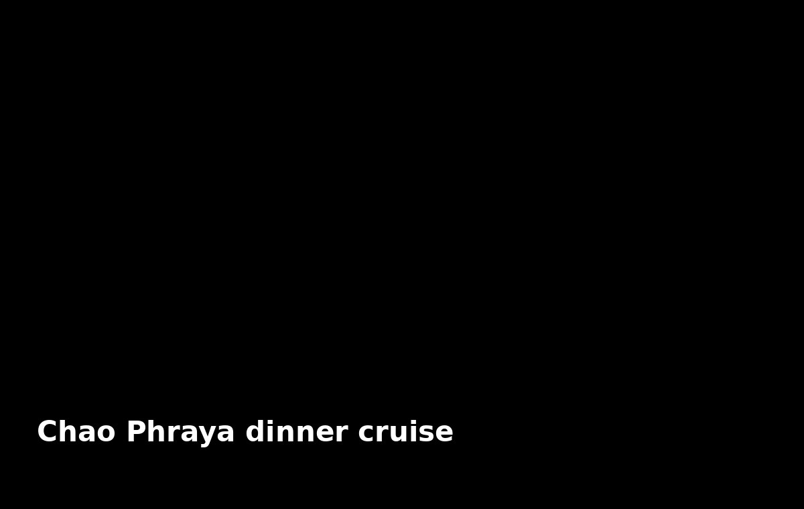
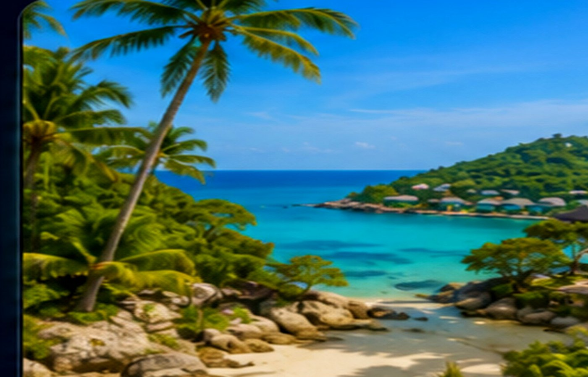
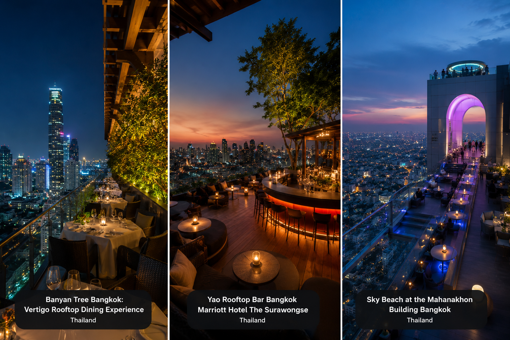

Par, foodies og luksus
Bangkok passer perfekt for deg som vil kombinere hotell, rooftop, spa, shopping og matopplevelser på én og samme reise.
Rooftopbarer, street food, luksushoteller, spa, shopping og kveldsliv samlet i én premium Bangkok-guide.
Bangkok er byen som aldri står stille. En by hvor luksuriøse rooftopbarer, Michelin-restauranter og femstjerners hoteller møter nattmarkeder, tuk tuk-kaos og gatekjøkken som serverer noen av verdens beste smaker.
Fra skyline over Chao Phraya-elven til skjulte cocktailbarer i Sukhumvit og dampende streetfood i Chinatown – Bangkok er en opplevelse som treffer alle sansene samtidig.
Bangkok passer perfekt for deg som vil kombinere hotell, rooftop, spa, shopping og matopplevelser på én og samme reise.
Sukhumvit, Riverside, Siam, Silom og Chinatown gir helt forskjellige Bangkok-opplevelser. Riktig område gjør reisen enklere.
Guiden kombinerer inspirerende magasininnhold med konkrete hotellvalg og affiliate-lenker til opplevelser du faktisk kan bestille.
Bangkok er stor, og området du velger betyr mye. Her er de viktigste områdene å forstå før du booker hotell.
Best for shopping, rooftopbarer, restauranter, BTS og nightlife. Et trygt valg for førstegangsreisende og par som vil ha alt i nærheten.
Roligere, mer romantisk og mer eksklusivt. Perfekt for Mandarin Oriental, Capella, dinner cruise og utsikt over Chao Phraya.
Best for Siam Paragon, CentralWorld, MBK og familier som vil bo sentralt med enkel transport.
God blanding av restauranter, rooftopbarer, businesshoteller og kort vei til elven.
Best for Yaowarat, nattmat, neonlys, lokale markeder og en mer intens Bangkok-følelse.
For cocktailbarer, restauranter, japansk mat, cafeer og mer lokal urban luksus.
Affiliate-lenkene er lagt tilbake på hvert hotellkort, med sponsored/noopener og åpning i ny fane.

Elegant hotell med spa, store rom og luksuriøs bybase.
Sjekk hotell →

Moderne hotell i Sukhumvit med god standard for pengene.
Sjekk hotell →
Store suiter, rooftop og rolig luksus over byen.
Sjekk hotell →
Sentralt, komfortabelt og praktisk nær shoppingområder.
Sjekk hotell →Populært hotell med god beliggenhet og enkel transport.
Sjekk hotell →
Kul design, sterk byfølelse og ikonisk beliggenhet.
Sjekk hotell →Legendarisk elvehotell for par, service og klassisk Bangkok-luksus.
Sjekk hotell →Her får Bangkok-guiden den premium-følelsen vi har snakket om: rooftopbarer, elvecruise, Chinatown, luksusspa og opplevelser som gjør byen mer enn bare hotell og shopping.
Skyline, cocktails og kveldsluft over byen. Dette er seksjonen som gir Bangkok-siden wow-effekt og passer perfekt for par, luksusreisende og alle som vil oppleve Bangkok fra toppen.

Asiatisk rooftop-stemning på Bangkok Marriott Hotel The Surawongse. Perfekt for en roligere, mer elegant kveld med utsikt.
Book rooftop →
Premium middag og cocktails med utsikt over Bangkok. Denne brukes som hovedknapp for rooftop-opplevelser.
Se rooftop dining →
Samleside for flere spise- og rooftop-opplevelser. Fin som fallback dersom én konkret bar er fullbooket.
Se opplevelser →
For lesere som vil ha mer energi: cocktails, utsikt og Bangkok etter mørkets frembrudd.
Finn rooftop-opplevelser →Dinner cruise er en av de enkleste opplevelsene å selge inn i Bangkok: lysene fra byen, Wat Arun, buffet, live musikk og romantisk stemning langs elven.
Perfekt for par og førstegangsreisende som vil se Bangkok fra elven på kvelden.
Book dinner cruise →
En mer premium cruise-vinkel for romantiske kvelder, bursdager og spesielle anledninger.
Se luxury cruise →Fin samleside for flere cruise-alternativer via Klook.
Se cruise hos Klook →
God fallback-link for elvecruise, dining og kveldsopplevelser i Bangkok.
Finn cruise →Ekstra cruise-link for flere alternativer, priser og tilgjengelighet.
Se Klook cruise →Fra Chinatown og nattmarkeder til fine dining og Michelin-følelse. Denne delen gjør guiden mer levende, mer personlig og mye sterkere for SEO.
Yaowarat er en av Bangkoks beste matopplevelser. Perfekt for streetfood, lokale smaker og kveldsstemning.
Book food tour →For lesere som vil ha tasting menus, premium thai cuisine og en mer eksklusiv matopplevelse.
Se luxury dining →Samleside for matopplevelser, natturer og lokale smaker i Bangkok.
Finn food tours →Kobler restaurantdelen med Bangkok etter mørket: barer, rooftop, cocktails og kveldsturer.
Se nightlife →Etter shopping, rooftopbarer og lange dager i varmen er spa en naturlig del av Bangkok-opplevelsen. Denne seksjonen passer spesielt godt for par, luksusreisende og førstegangsbesøkende.
Luksuriøs spa-opplevelse midt i byen. Perfekt å koble mot Park Hyatt, shopping og en roligere Bangkok-dag.
Book spa →Et trygt og populært valg for thai massasje, aromaterapi og avslapning etter sightseeing.
Book Let’s Relax →Samleside for flere spa- og massasjeopplevelser, fin som fallback i guiden.
Finn spa →Brukes i “Bangkok for par” og “Luxury Bangkok” for massasje, couples spa og premium wellness.
Se wellness →Ekstra KKday-link for spa, massasje og wellness-opplevelser.
Se KKday spa →Når solen går ned over Bangkok, våkner byen virkelig til liv. Skyline fylles med lys fra rooftopbarer høyt over byen, cocktailglass klirrer på luksuriøse takterrasser, og gatene rundt Sukhumvit, Chinatown og Thonglor fylles med musikk, streetfood og natteliv.
Start kvelden med sunset cocktails, fortsett med middag langs Chao Phraya-elven, og avslutt natten i skjulte cocktailbarer eller på nattmarkeder fulle av lokale smaker. Bangkok er en av få storbyer hvor luksus og kaos smelter sammen på en måte som føles helt unik.
Bangkok har utviklet seg til å bli en av Asias største luksusdestinasjoner. Her finner du noen av verdens mest eksklusive hoteller, Michelin-restauranter, rooftopbarer og spa-opplevelser – ofte til langt lavere priser enn i Europa.
Bo langs elven, nyt cocktails med utsikt over skyline, legg inn en dinner cruise-kveld og avslutt dagen med massasje eller wellness. For mange er Bangkok den perfekte kombinasjonen av storby, luksus og eventyr.
Det er kontrastene som gjør Bangkok unik: stille luksus ved elven, neonlys i Sukhumvit, dampende gatemat i Chinatown, glassheiser opp til rooftopbarer og spa som får hele byen til å senke skuldrene. Guiden er bygget for å gjøre det enkelt å velge riktig område, riktig hotell og de opplevelsene som faktisk gjør reisen minneverdig.
Utforsk Yaowarat, skjulte cocktailbarer, Michelin street food og håndplukkede matopplevelser langs Bangkok sine mest levende gater.

Opplev Yaowarat med lokal guide, hidden gems, seafood-markeder og ekte Thai street food langt unna turistfellene.
Utforsk food tour →
Se Bangkok skyline og Wat Arun fra elven med middag, cocktails og live underholdning ombord.
Se dinner cruise →
Lær autentisk Thai-matlaging med lokale kokker og besøk tradisjonelle markeder før matlagingskurset starter.
Se cooking classes →